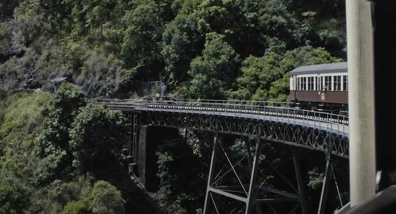

Journey Through Kuranda: A 3-Day Rainforest Retreat

Introduction
Kuranda, nestled in the heart of the Atherton Tablelands in Far North Queensland, is a charming village renowned for its lush rainforest, vibrant markets, and scenic landscapes. As Carl, a 38-year-old traveler from Australia, I embarked on a 3-day rainforest retreat to immerse myself in the natural beauty and cultural richness of Kuranda.
Brief History: Kuranda has a rich history influenced by its Indigenous heritage and European settlers who established it as a hub for gold mining in the late 19th century. Today, it is a popular destination for eco-tourism and cultural experiences.
Day 1: Arrival and Exploring the Village
Arriving at Kuranda via the scenic Skyrail Rainforest Cableway, I was greeted by breathtaking views of the rainforest canopy and the Barron Gorge. The first day was about exploring the village and its vibrant attractions.
I wandered through the Kuranda Markets, a bustling marketplace offering a variety of local crafts, artworks, and delicious street food. In the afternoon, I visited the Kuranda Koala Gardens, where I had the chance to see and interact with native Australian wildlife.
Day 2: Rainforest Adventures and Cultural Experiences
The second day was dedicated to immersing myself in the rainforest's natural wonders. I joined a guided rainforest walk, exploring ancient trees, cascading waterfalls, and diverse flora and fauna.
In the afternoon, I participated in an Indigenous cultural workshop, where I learned about traditional bush medicine, art, and storytelling. The experience provided a deep appreciation for the local Indigenous communities and their connection to the land.
Day 3: Scenic Train Ride and Farewell
On my final day, I took the Kuranda Scenic Railway back to Cairns, enjoying the stunning landscapes and engineering marvels along the way. The train journey offered panoramic views of the rainforest, rivers, and rugged mountains.
The trip concluded with a leisurely afternoon exploring local cafes and boutiques, picking up last-minute souvenirs before bidding farewell to the enchanting village of Kuranda.
Highlights
- Skyrail Rainforest Cableway: Scenic aerial views of the rainforest.
- Kuranda Markets: Vibrant marketplace with local crafts and cuisine.
- Kuranda Koala Gardens: Close encounters with native wildlife.
- Rainforest Walks: Exploring ancient trees and waterfalls.
- Indigenous Cultural Workshop: Insight into local traditions and heritage.
Practical Information
Transportation
Kuranda is accessible via the Skyrail Rainforest Cableway and the Kuranda Scenic Railway from Cairns. Renting a car from Cairns provides flexibility in exploring the region. Local buses and taxis are also available for shorter trips.
Accommodation
Kuranda offers a range of accommodations, from cozy bed and breakfasts to luxurious rainforest resorts. I stayed at a mid-range eco-lodge that provided comfortable amenities and easy access to natural attractions.
Budgeting
Kuranda is moderately priced. A comfortable daily budget ranges from $50 to $100 AUD, covering accommodation, meals, transportation, and activities.
Tips and Recommendations
Do’s and Don’ts
- Do: Book Skyrail and Scenic Railway tickets in advance to secure your preferred times.
- Don’t: Litter or disturb the natural environment during rainforest walks.
- Do: Wear comfortable footwear suitable for hiking and walking.
- Don’t: Engage in activities without proper guidance and equipment.
Packing Lists
- Lightweight, breathable clothing suitable for rainforest climates.
- Swimwear and water shoes.
- Insect repellent and sunscreen.
- Comfortable hiking boots or shoes.
- Rain jacket or umbrella for unexpected showers.
Local Etiquette
Respect the local Indigenous communities by seeking permission before photographing individuals or their property. Always greet with a friendly smile and a polite gesture. Dress modestly when visiting cultural and historical sites.
Cultural Immersion
Engaging with local Indigenous communities provided a profound understanding of their cultural practices and connection to the land. I participated in a traditional storytelling session, where elders shared tales of their ancestors and the region's history.
Visiting the Kuranda Heritage Markets allowed me to witness traditional arts and crafts, fostering meaningful connections and appreciation for their craftsmanship.
Food and Cuisine
Kuranda's culinary scene is a delightful blend of fresh rainforest produce and traditional Australian flavors.
- Fresh Seafood: Savoring locally caught fish and shellfish.
- Rainforest Fruits: Exotic fruits like mangosteen and rambutan.
- Bush Tucker: Traditional Indigenous-inspired dishes.
- Artisan Coffees: Enjoying rich and aromatic coffees at local cafes.
- Homemade Pastries: Delicious baked goods from local bakeries.
I highly recommend trying the fresh seafood at one of the waterfront restaurants, where you can enjoy the catch of the day while taking in stunning views of the river.
Adventure and Activities
Kuranda offers a variety of activities for adventure enthusiasts:
- Skyrail Rainforest Cableway: Scenic aerial views of the rainforest canopy.
- Kuranda Scenic Railway: Historic train journey through stunning landscapes.
- Rainforest Walks: Guided hikes through ancient rainforests.
- Wildlife Watching: Spot diverse bird species and native animals.
- Canyoning: Navigate through natural rock formations and waterfalls.
One of the most exhilarating activities was the canyoning adventure at Barron Gorge, where I navigated through natural rock formations and enjoyed refreshing swims in crystal-clear pools.
Personal Stories
Meeting Mia, a local Indigenous artist, was a highlight of my trip. She invited me to her art studio, where she showcased her beautiful paintings and shared stories of her cultural heritage.
Another unforgettable moment was witnessing a traditional Indigenous ceremony, where I learned about the spiritual practices and their deep connection to the land.
Conclusion
Kuranda is a captivating destination that offers a perfect blend of adventure, cultural immersion, and natural beauty. As Carl, I found my 3-day rainforest retreat to be an enriching and exhilarating journey through one of Queensland's most enchanting villages.
If you're planning a trip to Australia, Kuranda should definitely be on your list. Whether you're seeking outdoor adventures, cultural experiences, or simply a tranquil escape, Kuranda has something for everyone.
Until next time, happy travels!